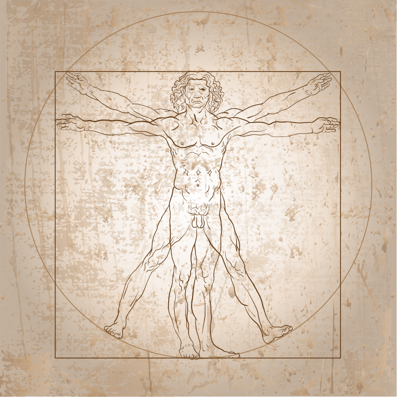
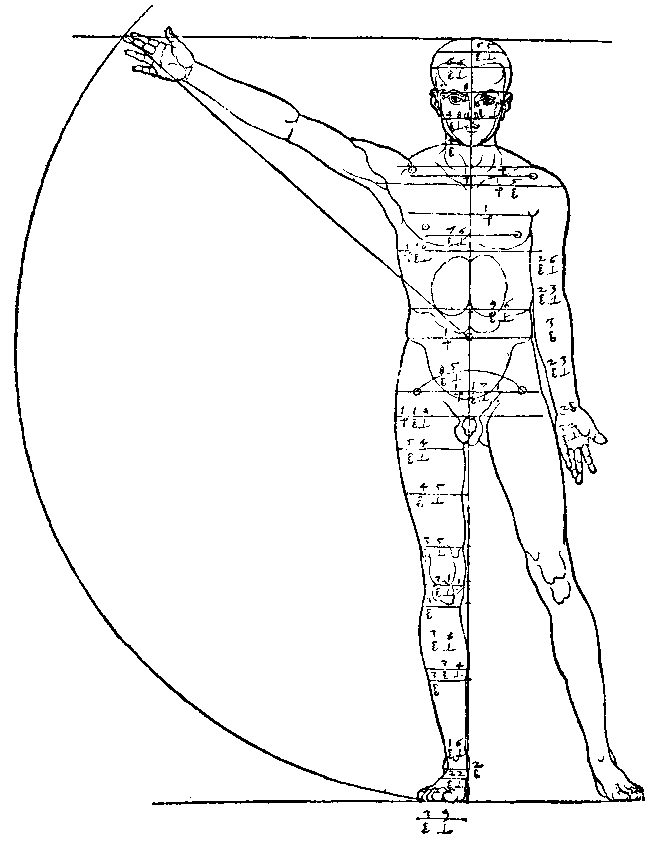
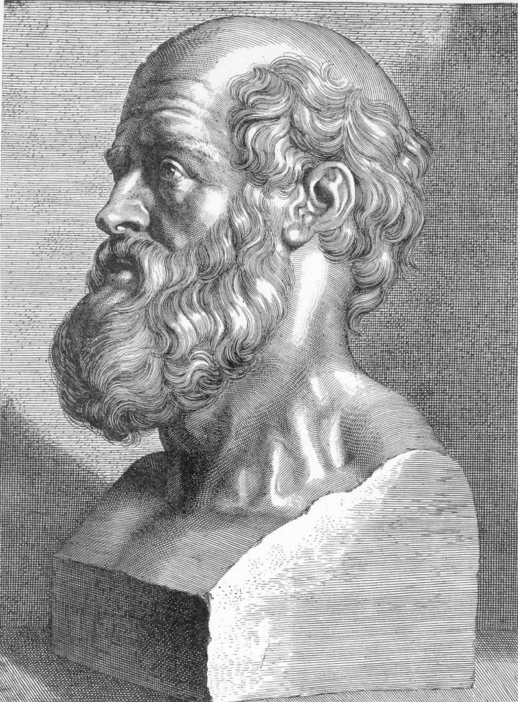
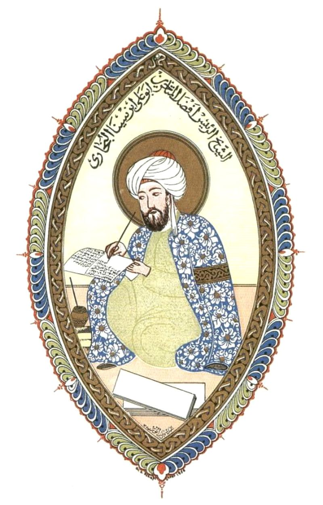
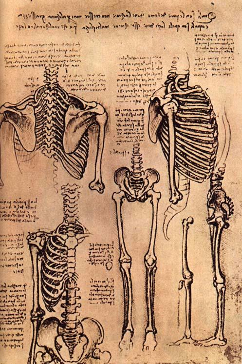
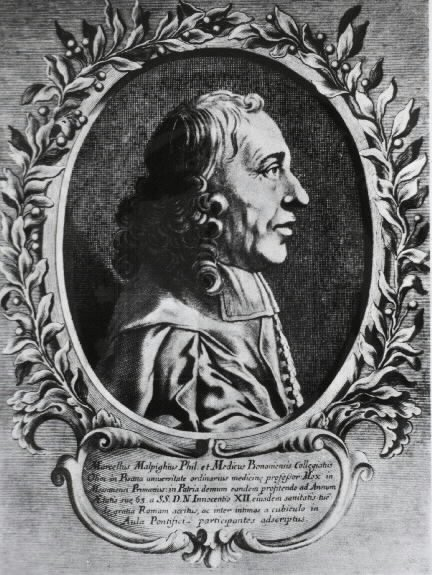
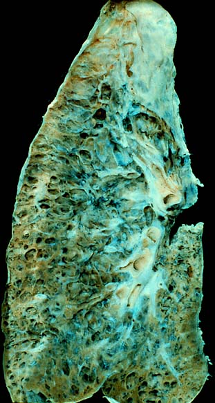
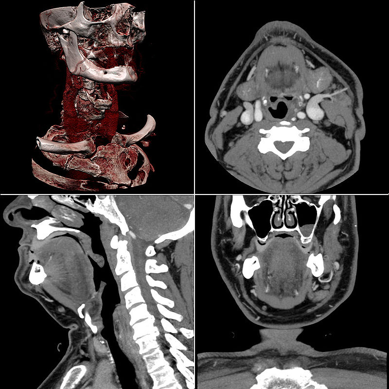
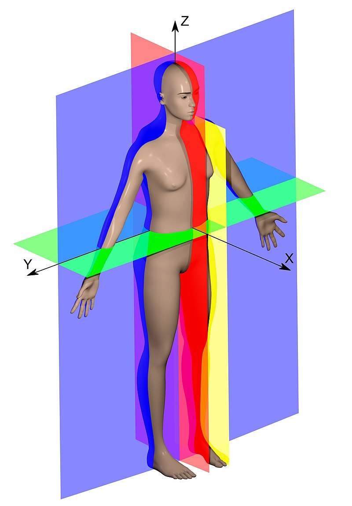
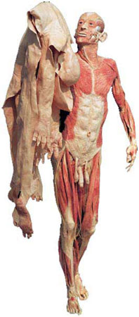

Анатомия человека
Леонардо да Винчи. «Витрувианский человек»
Альбрехт Дюрер. "Пропорции тела человека (мужчины)"
Анато́мия челове́ка (от др.-греч. ἀνατομή — рассечение > от др.-греч. ἀνά сверху и др.-греч. τομή, tomé — разрезание) — раздел анатомии, изучающий морфологию человеческого организма, его систем и органов. Предметом изучения анатомии человека являются форма и строение, происхождение и развитие человеческого организма. Анатомия человека — одна из фундаментальных дисциплин в системе медицинского и биологического образования, тесно связанная с такими отделившимися от неё дисциплинами, как антропология и физиология человека, а также сравнительной анатомией, эволюционным учением и генетикой. Выделение анатомии человека из сферы анатомии живых организмов обусловлено не только наличием у человека характерных анатомических признаков, но и формированием у человека мышления, сознания и членораздельной речи.
Анатомия «нормального» (здорового) тела человека традиционно рассматривается по системам органов — нормальная (систематическая) анатомия человека. Помимо этого, на базе анатомии человека, с учётом накопленного хирургического опыта, была создана такая дисциплина, как топографическая анатомия, позволяющая оперирующим хирургам изучать строение тела по областям, рассматривая взаимоотношения органов друг с другом, со скелетом и др. Развивается функциональная анатомия, рассматривающая строение человека с точки зрения его функций (например, строение кровеносных сосудов с позиций гемодинамики, механизм перестройки кости с учётом функций воздействующих на неё мышц и т. д.).
Достижения медицины способствовали выделению отдельной дисциплины, изучающей морфологические изменения систем и органов человека при заболеваниях — патологической анатомии.
С развитием рентгенологии была создана принципиально новая анатомическая дисциплина — рентгеноанатомия, предметом изучения которой является структура рентгенологического изображения внутренних органов. Внешнюю форму тела человека и его пропорции изучает пластическая анатомия.
1. Историческое развитие анатомии человека как науки
Знания об анатомии в Древнем мире
Первые упоминания о строении человеческого тела встречаются в Древнем Египте. В XXVII веке до н. э. египетский врач Имхотеп описал некоторые органы и их функции, в частности головной мозг, деятельность сердца, распространение крови по сосудам. В древнекитайской книге «Нейцзин» (XI—VII века до н. э.) упоминаются сердце, печень, лёгкие и другие органы тела человека. В индийской книге «Аюрведа» («Знание жизни», IX—III века до н. э.) содержится большой объём анатомических данных о мышцах, нервах, типах телосложения и темперамента, головном и спинном мозге.
Гиппократ
Большое влияние на развитие анатомии человека оказали учёные Древней Греции. Первым греческим анатомом считают врача и философа Алкмеона Кротонского, владевшего прекрасной техникой препарирования. Выдающимися представителями греческой медицины и анатомии были Гиппократ, Аристотель, Герофил. Гиппократ (460—377 годы до н. э.) учил, что основу строения организма составляют четыре «сока»: кровь (sanguis), слизь (phlegma), желчь (chole) и чёрная желчь (melaina chole). От преобладания одного из этих соков зависят и виды темперамента человека: сангвиник, флегматик, холерик и меланхолик. Названные виды темперамента определяли, по Гиппократу, одновременно и разные типы конституции человека, которые могут изменяться соответственно содержанию тех же «соков» тела. Исходя из такого представления об организме, Гиппократ смотрел и на болезни, как на результат неправильного смешения жидкостей, вследствие чего ввёл в практику лечения различные «гонящие жидкость» средства. Так возникла «гуморальная» теория строения организма. Гиппократ большое значение придавал изучению анатомии, считая её первоосновой медицины. По Платону (427—347 годы до н. э.), организм человека управлялся тремя видами «пневмы», помещающимися в трёх главнейших органах тела — мозге, сердце и печени. Ученик Платона Аристотель (384—323 годы до н. э.) сделал первую попытку сравнения тела животных и изучения зародыша и явился зачинателем сравнительной анатомии и эмбриологии.
В 2020 году ученые установили, что древнекитайские медицинские тексты, найденные в Мавандуй и датируемые 168 г. до н. э., являются древнейшим атласом анатомии человека.
Не меньший вклад, чем древнегреческие внесли в изучение анатомии человека древнеримские учёные. Их заслугой следует считать создание латинской анатомической терминологии. Наиболее яркими представителями римской медицины были Цельси Гален. Гален считал, что человеческое тело состоит из плотных и жидких частей и исследовал организм путём наблюдения за больными и вскрытия трупов. Он одним из первых применил вивисекцию и явился основоположником экспериментальной медицины. Его основные труды по анатомии: «Анатомические исследования», «О назначении частей человеческого тела». Цельс в своих трудах по медицине собрал самые достоверные (на то время) знания по гигиене, диете, терапии, хирургии и патологии. Заложил основу медицинской терминологии. Ввёл в хирургию лигатуру для перевязки кровеносных сосудов.
Авиценна
Наиболее известный персидский врач Авиценна (980—1037 годы) написал «Канон врачебной науки» (около 1000 года), содержащий значительные анатомо-физиологические данные, заимствованные у Гиппократа, Аристотеля и Галена, к которым Авиценна прибавил собственные представления о том, что организм человека управляется не тремя органами, как утверждал Платон, а четырьмя: сердцем, мозгом, печенью и яичком.
Средние века и эпоха Возрождения
В эпоху Средневековья в анатомии человека не было сделано существенных открытий. В этот период были запрещены вскрытия, изготовление скелетов.
Анатомы эпохи Возрождения первыми после античных врачевателей предприняли попытки изучить строение человека и процессы, происходящие в нём, и положили начало научной медицине и анатомии. Они добились разрешения на проведение вскрытий. Были созданы анатомические театры для проведения публичных вскрытий.
Первопроходцем является отец современной анатомии Мондино де Луцци. Он возобновил долгое время запрещавшуюся средневековой католической церковью практику публичных вскрытий трупов умерших людей в целях обучения студентов медицине, а также написал первый со времён Галена современный анатомический трактат «Анатомия» (1316), основывавшийся на собственных результатах вскрытий.
Основоположниками научной анатомии являются Леонардо да Винчи, Андреас Везалий и Уильям Гарвей.
Рисунок скелета, сделанный Леонардо да Винчи
Леонардо да Винчи (1452—1519), заинтересовавшись анатомией как художник, в дальнейшем увлёкся ею как наукой, одним из первых стал вскрывать трупы людей для исследования строения человеческого тела. Леонардо да Винчи первым правильно изобразил различные органы человеческого тела, внёс крупный вклад в развитие анатомии человека и животных, а также явился основоположником пластической анатомии.
Андреас Везалий (1514—1564) использовал объективный метод наблюдения при описании строения человеческого тела. Вскрывая трупы, Везалий впервые систематически изучил строение тела человека. При этом он разоблачил и устранил многочисленные ошибки Галена (более 200). Так начался аналитический период в анатомии, в течение которого было сделано множество открытий описательного характера. Везалий уделил основное внимание открытию и описанию новых анатомических фактов, которые изложил в обширном и богато иллюстрированном труде «De humani corporis fabrica» («О строении человеческого тела») (1543). Опубликование книги Везалия вызвало, с одной стороны, переворот в анатомических представлениях того времени, а с другой — сопротивление анатомов, старавшихся сохранить авторитет Галена.
Английский врач, анатом и физиолог Уильям Гарвей (1578—1657), как и его предшественник Везалий, изучал организм, пользуясь наблюдениями и опытом. При изучении анатомии, Гарвей не ограничивался простым описанием структуры, а подходил с исторической (сравнительная анатомия и эмбриология) и функциональной (физиология) точек зрения. Он высказал догадку о том, что животное в своём онтогенезе повторяет филогенез, и таким образом предвосхитил биогенетический закон, доказанный Ковалевским и сформулированный позднее Геккелем и Мюллером в XIX столетии. Гарвей утверждал, что всякое животное происходит из яйца. Это положение даёт право считать Гарвея основоположником эмбриологии. Гарвей доказал цикличность кровообращения и тем самым отверг учение Галена о «пневме» и приливах и отливах крови. Результаты своих исследований Гарвей изложил в знаменитом трактате «Анатомическое исследование о движении сердца и крови у животных» (1628), где утверждал, что кровь движется по замкнутому кругу сосудов, проходя из артерий в вены через мельчайшие трубочки.
Новое время
На протяжении XVII—XVIII веках появляются не только новые открытия в области анатомии, но и начинает выделяться ряд новых дисциплин: гистология, эмбриология, сравнительная и топографическая анатомия, антропология.
Марчелло Мальпиги
После открытия Гарвея ещё оставалось неясным, как кровь переходит из артерий в вены, но Гарвей предсказал существование между ними невидимых глазом анастомозов, что и было подтверждено позднее Марчелло Мальпиги (1628—1694), когда был изобретён микроскоп. Мальпиги сделал много открытий в области микроскопического строения кожи, селезёнки, почки и ряда других органов. Мальпиги открыл предсказанные Гарвеем капилляры, но он полагал, что кровь из артериальных капилляров попадает сначала в «промежуточные пространства» и лишь затем в капилляры венозные. Только Шумлянский (1748—1795), изучивший строение почек, доказал отсутствие «промежуточных пространств» и наличие прямой связи между артериальными и венозными капиллярами. Таким образом, Шумлянский впервые доказал, что кровеносная система замкнута.
Член Санкт-Петербургской Академии наук Каспар Вольф (1734—1794) доказал, что в процессе эмбриогенеза, органы возникают и развиваются заново. Поэтому в противовес теории преформизма, согласно которой все органы существуют в уменьшенном виде в половой клетке, он выдвинул теорию эпигенеза.
Французский естествоиспытатель Жан Батист Ламарк (1744—1829) в своём сочинении «Философия зоологии» (1809) одним из первых высказал идею эволюции организма под влиянием окружающей среды. Продолжатель эмбриологических исследований Вольфа русский академик Карл Эрнст фон Бэр (1792—1876) открыл яйцеклетку млекопитающих и человека, установил главные законы индивидуального развития организмов (онтогенеза), которые лежат в основе современной эмбриологии, и создал учение о зародышевых листках. Английский учёный Чарльз Дарвин (1809—1882) в своём произведении «Происхождение видов» (1859) доказал единство животного мира.
Эмбриологические исследования Ковалевского, а также Бэра, Мюллера, Дарвина и Геккеля нашли своё выражение в биогенетическом законе. Последний был углублён и исправлен Северцовым, который доказал влияние факторов внешней среды на строение тела животных и, применив эволюционное учение к анатомии, явился создателем эволюционной морфологии.
2. Нормальная анатомия человека
Нормальная (систематическая) анатомия человека — раздел анатомии человека, изучающий строение «нормального», то есть здорового человека по системам органов, органам и тканям. Орган — часть тела определённой формы и конструкции, имеющая определённую локализацию в организме и выполняющая определённую функцию (функции). Каждый орган образован определёнными тканями, имеющими характерный клеточный состав. Органы, которые объединены анатомически и функционально, имеющие единое происхождение и общий план строения, составляют систему органов.
Разделами нормальной (систематической) анатомии человека являются: остеология — учение о костях, синдесмология — учение о соединениях частей скелета, миология — учение о мышцах, спланхнология — учение о внутренних органах пищеварительной, дыхательной и мочеполовой систем, ангиология — учение о кровеносной и лимфатической системах, анатомия нервной системы (неврология) — учение о центральной и периферической нервной системах, эстезиология — учение об органах чувств.
3. Патологическая анатомия человека
Патологоанатомическая картина «сотового лёгкого» как исход интерстициального заболевания лёгочной ткани
Патологическая анатомия — научно-прикладная дисциплина, изучающая патологические процессы и болезни с помощью научного, главным образом микроскопического, исследования изменений, возникающих в клетках и тканях организма, органах и системах органов. Основателем современной патологической анатомии считается Рудольф Вирхов — немецкий исследователь, создавший учение о целлюлярной (клеточной) патологии. Помимо сущности микроскопических изменений в тканях, современная патологическая анатомия включает в себя изучение причин (этиологию), механизмов развития (патогенез), а также осложнений и исходов заболеваний. Она занимается также исследованием причин и механизмов смерти (танатогенез) при разных болезнях, изменчивостью заболеваний (патоморфоз) и патологией, вызываемой лечением (ятрогенная патология, ятрогения).
4. Топографическая анатомия
В последние десятилетия топографическая анатомия доступна для изучения при помощи метода компьютерной томографии с трёхмерной и мультипланарной (многопроекционной) реконструкцией
Топографическая анатомия (хирургическая анатомия) — научно-прикладная дисциплина, раздел анатомии, изучающий послойное строение анатомических областей, взаиморасположение (синтопию) органов, их проекцию на кожу (голотопию), отношение к скелету (скелетотопию), кровоснабжение, иннервацию и лимфоотток в условиях нормы и патологии, с учётом возрастных, половых и конституциональных особенностей организма.
Имеет прикладное значение для хирургии.
Топографическая анатомия изучает строение человеческого организма по условно выделяемым известным частям тела (голова, шея, туловище и конечности), каждая из которых дифференцируется на относительно небольшие анатомические области.
5. Анатомическая терминология
Все описания в анатомии человека основаны на предположении, что тело находится в позиции анатомической стойки, то есть человек стоит прямо, руки опущены, ладони обращены вперёд.
Направление
Области, расположенные ближе к голове, называются верхними; дальше — нижними. Верхний, superior, и нижний, inferior, соответствуют общеанатомическим понятиям краниальный и каудальный. Передний, anterior, и задний, posterior, соответствуют общеанатомическим понятиям вентральный и дорсальный. Анатомические образования, лежащие ближе к срединной линии — медиальные, medialis, а расположенные дальше — латеральные, lateralis. Образования, расположенные на срединной линии, называют срединными, medianus. Образования, расположенные ближе к середине туловища будут проксимальными по отношению к более удалённым, дистальным.
Плоскости
Если тело человека, находящегося в анатомической стойке, условно поместить в трёхмерную прямоугольную систему координат, плоскость YX оказывается расположенной горизонтально, ось X располагается в переднезаднем направлении, ось Y идёт слева направо или справа налево, а ось Z направляется вверх и вниз, то есть вдоль тела человека.
Анатомические плоскости. Зелёным цветом обозначена аксиальная плоскость, синим — фронтальная плоскость, красным — сагиттальная плоскость, жёлтым — одна из парасагиттальных плоскостей (параллельная сагиттальной).
-
Сагиттальная плоскость, XZ
разделяет правую и левую половины тела. Частным случаем сагиттальной плоскости является срединная плоскость, она проходит точно посередине тела, разделяя его на две симметричные половины.
-
Фронтальная плоскость, или корональная, YZ
также располагается вертикально, перпендикулярно к сагиттальной, она отделяет переднюю (вентральную) часть тела от задней (дорсальной) части.
-
Горизонтальная, аксиальная, или поперечная плоскость, XY
перпендикулярна двум первым и параллельна поверхности земли, она отделяет вышележащие отделы тела от нижележащих.
Движение
Термином сгибание, flexio, обозначают движение одного из костных рычагов вокруг фронтальной оси, при котором угол между сочленяющимися костями уменьшается. Движение в противоположном направлении называется разгибанием, extensio.
Исключением является голеностопный (надтаранный) сустав, в котором разгибание сопровождается движением пальцев вверх, а при сгибании, например, когда человек встаёт на цыпочки, пальцы движутся книзу.
Движениями вокруг сагиттальной оси являются приведение, adductio, и отведение, abductio. Приведение — движение кости по направлению к срединной плоскости тела или (для пальцев) к оси конечности, отведение характеризует движение в противоположном направлении.
Под вращением, rotatio, понимают движение части тела или кости вокруг своей продольной оси. Вращение конечностей обозначают также терминами пронация, pronatio, или вращение кнутри, и супинация, supinatio, или вращение кнаружи. При пронации ладонь свободно висящей верхней конечности поворачивается кзади, а при супинации — кпереди. Если при движении вокруг всех трёх осей конец конечности описывает окружность, такое движение называют круговым, circumductio.
Антероградным называют движение по ходу естественного тока жидкостей и кишечного содержимого, движение же против естественного тока называют ретроградным. Так, движение пищи изо рта в желудок антероградное, а при рвоте — ретроградное.
